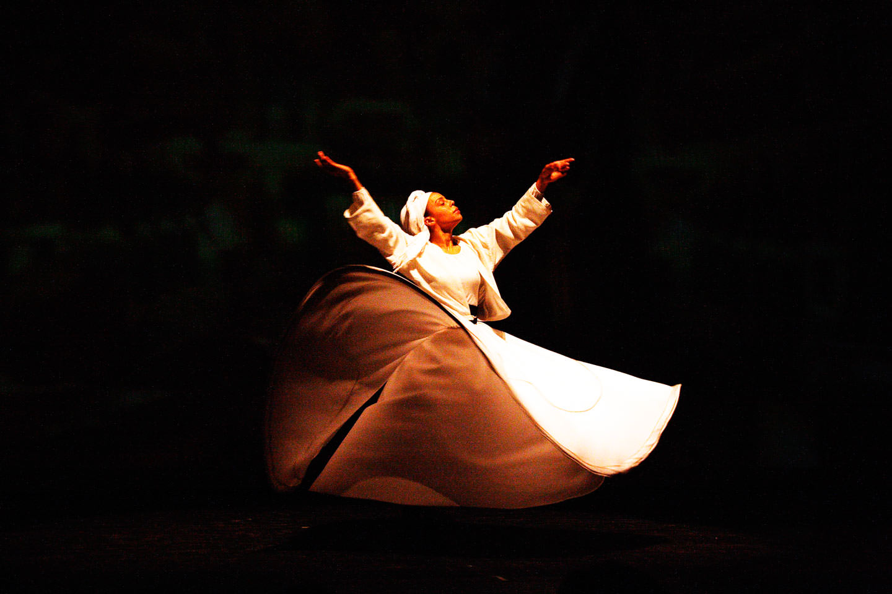
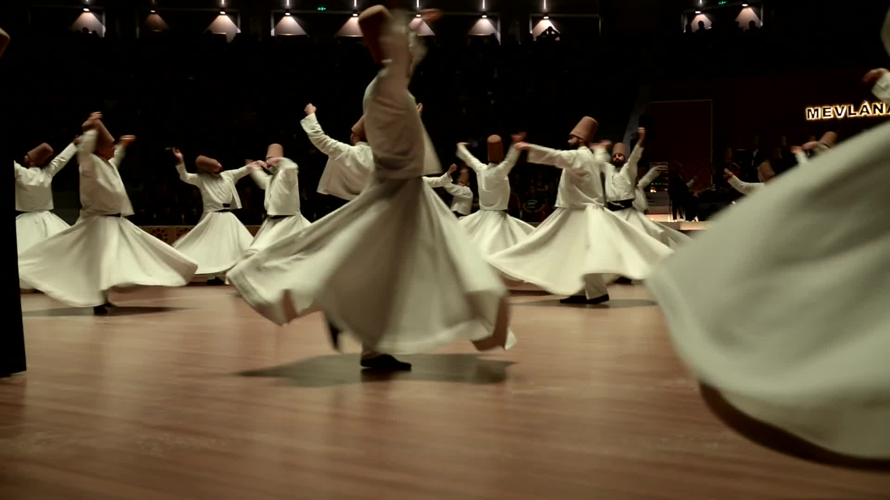
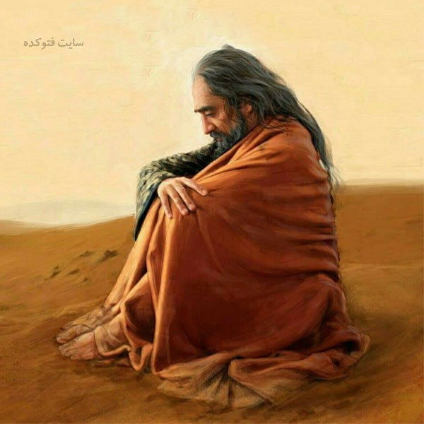

جدید
یکی میگفت که مولانا سخن نمیفرماید
یکی میگفت که مولانا سخن نمی فرماید گفتم آخر این شخص را نزد من خیال من آورد اینخیال من
با وی سخن نگفت که چونی یا چگونهٔ بی سخن خیال او را اینجا جذب کرد اگر حقیقت من
او را بی سخن جذب کند و جای دیگر برد چه عجب باشد.سخن سایهٔ حقیقت است
و فرع حقیقت چون سایه جذب کرد حقیقت بطریق اولی سخن بهانه است آدمی رابا آدمی آن جزو مناسب
جذب میکند نه سخن بلک اگر صدهزار معجزه و بیان و کرامات ببیند چون درو از آن نبی و
یا ولی جز وی نباشد مناسب سود ندارد آن جزوست که او را در جوش و بی قرار میدارد
در کَهْ از کهربا اگر جزوی نباشد هرگز سوی کهربا نرود آن جنسیت میان ایشان خفیست در نظر نمیآید
آدمی را خیال هر چیز با آن چیز میبرد خیال باغ بباغ میبرد و خیال دکان بدکان اما درین
خیالات تزویر پنهانست نمیبینی که فلان جایگاه ميروی پشیمان میشوی و میگویی پنداشتم
که خير باشد آن خود نبود پس این خیالات بر مثال چادرند و در چادر کسی پنهانست هرگاه که خیالات
از میان برخیزند و حقایق روی نمایند بی چادر خیال قیامت باشد آنجا که حال چنين شود پشیمانی نماند
هر حقیقت که ترا جذب میکند چیز دیگر غير آن نباشد همان حقیقت باشد که ترا جذب کرد یَوْمَ تُبْلَي الْسَّرَائِرُ
چه جای اینست که میگوییم در حقیقت کشنده یکیست اما متعدد می نماید نمیبینی که آدمی را صد چیز آرزوست
گوناگون میگوید تُتماج میخواهم بورک خواهم حلو خواهم قلیه خواهم میوه خواهم خرما خواهم
این اعدادمینماید و بگفت میآورد اما اصلش یکیست اصلش گرسنگیست و آن یکیست نمیبینی چون از یک چیز سير شد
میگوید هیچ ازینهانمیباید پس معلوم شد که ده و صد نبود بلک یک بود.وَمَا جَعَلْنَا عِدَّتَهُمْ اِلاّ فِتْنَةً کدام صد
کدام پنجاه کدام شصت قومی بی دست و بی پا و بی هوش و بی جان چون طلسم و ژیوه و سیماب میجنبند
فیه ما فیه
June 24, 2020
36 نظر
نگارنده محمد

جدید
گفت که شب و روز دل و جانم بخدمتست
گفت که شب و روز دل و جانم بخدمتست و ازمشغولیها و کارهای مغول بخدمت نمی توانم رسیدن، فرمود که اینها
هم کار حق است زیرا سبب امن و امان مسلمانیست خود را فدا کردهاید بمال و تن تا دل ایشان را بجای آرید تا
مسلمانی چند با من بطاعت مشغول باشند، پس این نیز کار خیر باشد و چون شما را حق تعالی بچنین کار خیر میل داده است
و فرط رغبت دلیل عنایت است و چون فتوری باشد درین میل دلیل بی عنایتی باشد که حق تعالی نخواهد که چنین خیر خطیر بسبب
او برآید تا مستحق آن ثواب و درجات عالی نباشد همچون حماّم که گرمست آن گرمی او از آلت تونست همچون گیاه و هیمه و عَذرِه و غیره حق تعالی اسبابی پیدا کند که
اگرچه بصورت آن بد باشد و کره اما در حق او عنایت باشد چون حمام او گرم میشود و سود آن بخلق میرسد درین میان یاران آمدند
عذر فرمود که اگر من شما را قیام نکنم و سخن نگویم و نپرسم این احترام باشد زیرا احترام هر چیزی لایق آن وقت باشد در نماز نشاید پدر و برادر را پرسیدن
و تعظیم کردن و بی التفاتی بدوستان و خویشان در حالت نماز عین التفاتست و عین نوازش زیرا چون بسبب ایشان خود را از طاعت و استغرا
نکند و مشوش نشود پس ایشان مستحق عقاب و عتاب نگردند پس عین التفات ونوازش باشد چون حذر کرد
از چیزی که عقوبت ایشان در آنست.
فیه ما فیه
June 16, 2020
48 نظر
نگارنده علیرضا
گفت که این چه لطفست که مولانا تشریف فرمود
گفت که این چه لطفست که مولانا تشریف فرمود توقعّ نداشتم و در دلم نگذشت چه لایق اینم مرا
میبایست شب و روز دست گرفته در زمره وصف چاکران و ملازمان بودمی هنوز لایق آن نیستم این چه لطف
بود فرمود که این از جملهٔ آنست که شما را همّتی عالیست هر چند که شما را مرتبهٔ عزیزست و بزرگ و بکارهای
خطیر و بلند مشغولید از علو همّت خود را قاصر میبینید وبدان راضی نیستید و برخود
چیزهای بسیار
لازم میدانید اگرچه ما را دل هماره بخدمت بود، اماّ میخواستیم که بصورت هم مشرف شویم زیرا که
نیز صورت اعتباری عظیم دارد چه جای اعتبار خود مشارکست با مغز همچنانک کار بی مغز برنمیاید بی
پوست نیز برنمیآید چناک دانه را اگر بی پوست در زمین کاری بر نیاید چون بپوست در زمین دفع کنی
برآید و درختی شود عظیم پس ازین روی تن نیز اصلی عظیم باشد و دربایست شود و بی او خود کار
برنیاید ومقصود حاصل نشود ای واللهّ، اصل معنیست پیش آنک معنی را داند و معنی شده باشد اینک
میگویند رَکْعَتَیْنِ مِنَ الصَلوةِ خَیْرٌ مِنَ الدُّنْیَا وَمَا فِیْهَا پیش هرکس نباشد پیش
آن کس باشد که اگر رکعتین ازو فوت شود بالای دنیا و آنچه دروست باشد و از فوت ملک دنیا که جمله
آن او باشد فوت دو رکعتش دشوارتر آید.
فیه ما فیه
June 11, 2020
24 نظر
نگارنده آوا

اینجا چیزی فراموش کردهام.
در عالم یک چیز است که آن فراموش کردنی نیست. اگر جمله چیزها را فراموش کنی و آن را فراموش نکنی باک
نیست و
اگر جمله را به جای آری و یاد داری و فراموش نکنی و آن را فراموش کنی هیچ نکرده باشی. همچنانکه
پادشاهی تو را به ده فرستاد برای کاری معین، تو رفتی و صد کار دیگر گزاردی چون آن کار را که برای آن
رفته
بودی نگزاردی چنان است که هیچ نگزاردی،< پس آدمی در این عالم برای کاری آمده است و مقصود آن است، چون آن
نمیگزارد پس هیچ نکرده باشد.
«اِنَّا عَرَضْنَا الْاَمَانَةَ عَلَی الْسَّمَواتِ وَالْاَرضِ وَالْجِبَالِ فَاَبَیْنَ اَنْ
یَحْمِلْنَهَا وَاَشْفَقْنَ مِنْهَا وَحَمَلَهَا الْاِنْسانُ اِنَّهُ کَانَ ظَلُوْماً جَهُوْلاً» آن
امانت را
بر آسمانها عرض داشتیم نتوانست پذرفتن. بنگر که از او چند کارها میآید که عقل در او حیران میشود،
سنگها را لعل و یاقوت میکند،
کوهها را کان زر و نقره میکند، نبات زمین را در جوش میآرد و زنده میگرداند و بهشت عدن میکند، زمین
نیز دانها را میپذیرد و پیدا میکند و جبال
نیز همچنین معدنهای گوناگون میدهد، این همه میکنند اما از ایشان آن یکی کار نمیآید آن یک (کار) از
آدمی میآید.
فیه ما فیه
June 4, 2020
72 نظر
نگارنده هوتن